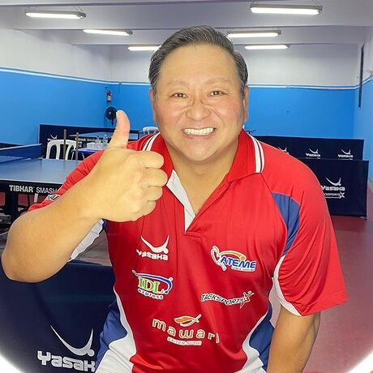
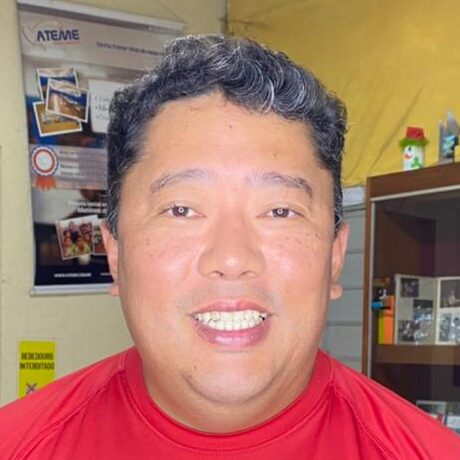
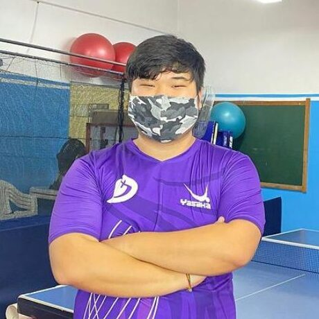
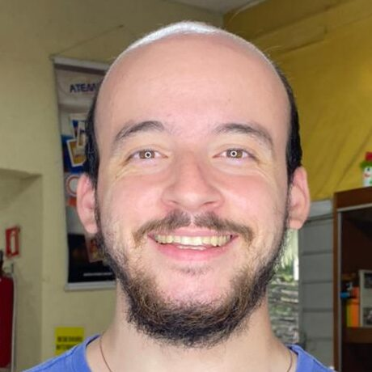

Equipe Técnica
Profissionais qualificados e dedicados, comprometidos em desenvolver o potencial de cada aluno com metodologia, atenção e paixão pelo tênis de mesa.

Fumihiro Takahashi
Fluente no Japonês e Inglês, é Técnico de tênis de mesa na academia ATEME desde 2013.
Técnico de tênis de mesa de 1991 a 2012 pelo clube SONODA Takken-Hyogo-Japão.
Jogador pela federação paulista de tênis de Mesa no ano de 1977 a 1990.
Jogador pela seleção brasileira mirim / infantil / juvenil / adulto 1978 a 1991.
Participação em campeonatos mundias:
1987(Índia) / 1989(Alemanha) / 1991(Japão).
1989 – Campeão Pan-americano de Equipe com Claudio Kano / Hugo Hoyama / Issamu Kawai.
1987 – Campeão Brasileiro adulto dupla e equipe.
1987 – Vice-Campeão Brasileiro adulto individual.
1986 – Campeão Sul-americano juvenil individual / dupla / dupla mista.
1986 – Vice-Campeão Brasileiro adulto individual.
1985 – Campeão Paulista juvenil de equipe / individual / dupla / dupla mista.
1985 – Campeão Brasileiro juvenil de equipe / individual / dupla / dupla mista.
Melhor atleta do ano: 1980 / 81 / 82

Hugo Suzuki
Iniciou aos 12 anos jogando tênis de mesa no Clube Bunkyo, fez estágio de 1 ano no Japão e participou no mundial universitário na China e Sulamericano no Chile. Foi campeão Paulista, Brasileiro, Jogos Regionais e Abertos. Foi organizador dos Jogos Panamericano em 2007, Aberto do Brasil, Sulamericano Latino Americano Brasileiro e Paulista. Hoje é Vice Presidente da Federação Paulista de Tênis de Mesa, Diretor de Tênis de Mesa do Corinthians e Diretor de Tênis de Mesa da UNIP.

Paulo Molitor
Iniciou aos 12 anos jogando tênis de mesa no Clube Bunkyo, fez estágio de 1 ano no Japão e participou no mundial universitário na China e Sulamericano no Chile. Foi campeão Paulista, Brasileiro, Jogos Regionais e Abertos. Foi organizador dos Jogos Panamericano em 2007, Aberto do Brasil, Sulamericano Latino Americano Brasileiro e Paulista. Hoje é Vice Presidente da Federação Paulista de Tênis de Mesa, Diretor de Tênis de Mesa do Corinthians e Diretor de Tênis de Mesa da UNIP.

Victor Terohata
Vitor Terohata Iniciou os treinos em 2009 com o técnico Osmir Tamura. Em 2011 foi o terceiro melhor atleta da liga Nipo, campeão do torneio interempresas e campeão dos jogos regionais do interior com a equipe de São Roque. Em 2012 se sagrou campeão de equipes e campeão geral dos jogos regionais do interior com a equipe de Santana do Parnaíba. Em 2014 foi terceiro colocado de equipes no torneio universitário FUPE, foi campeão de equipes e terceiro lugar no geral dos jogos regionais do interior com a equipe de São Roque e quarto lugar geral nos jogos abertos do interior. Em 2016 foi terceiro lugar em equipes, 5 lugar na categoria adulta e 5 lugar na categoria especial no torneio intercolonial. Em 2017 foi vice campeão geral dos jogos regionais do interior com a equipe de são Roque e 4 lugar no geral dos jogos abertos do interior

Alfredo Neto
Atleta da ateme desde 2010, onde treinou até meados de 2016, juntamente começou a ministrar aulas na Academia, seus títulos expressivos foi considerado o melhor atleta no ano de 2012,do maior campeonato amador da América Latina, Liga Nipo Brasileira. Foi campeão em diversas etapas da Liga, o maior título que ele considera foi quando a equipe da ATEME se consagrou campeã do Torneio Inter empresas em 2014.